Raspberry Pi用AI Car Board DKFA-05
コード番号:DKFA-05
Revision 3.1.1
Revision 3.1.0
外観
表
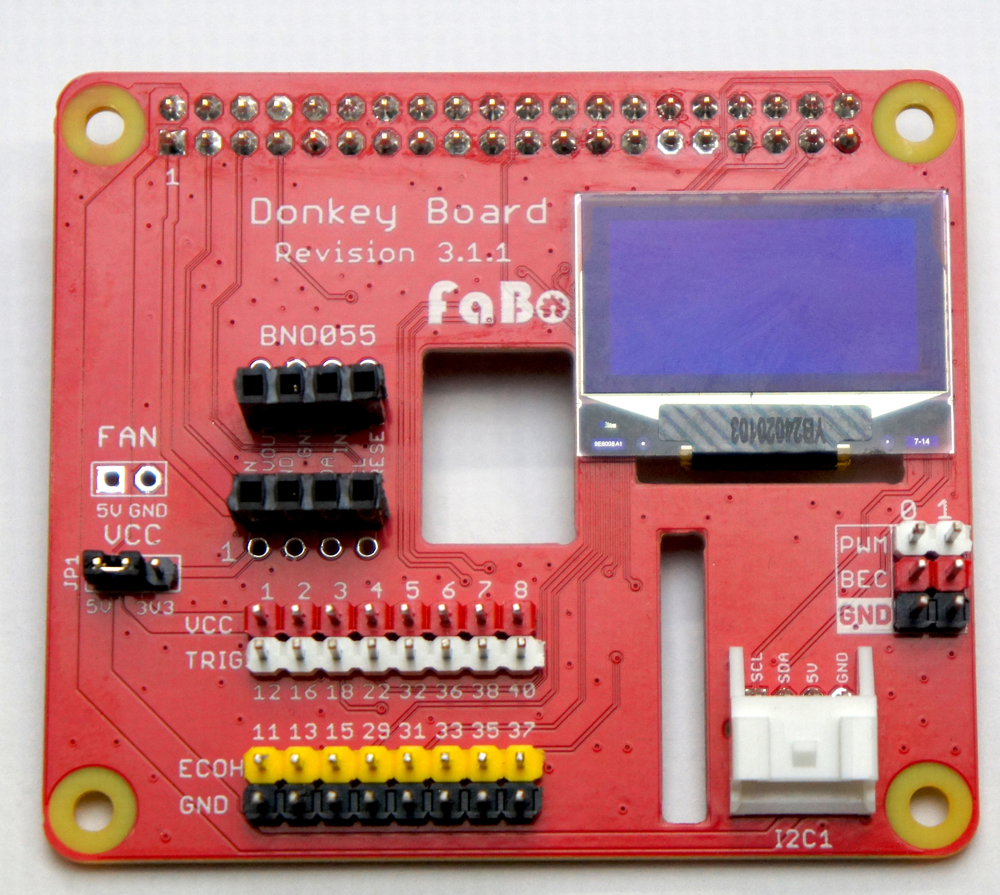
裏
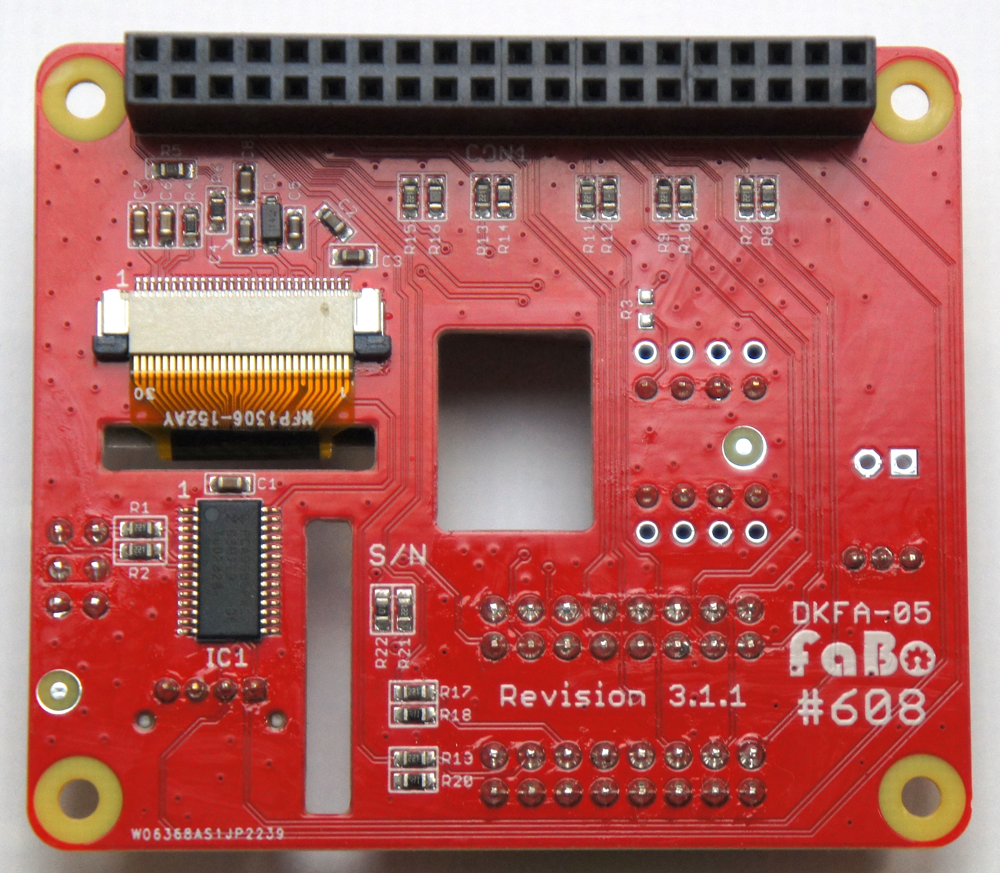
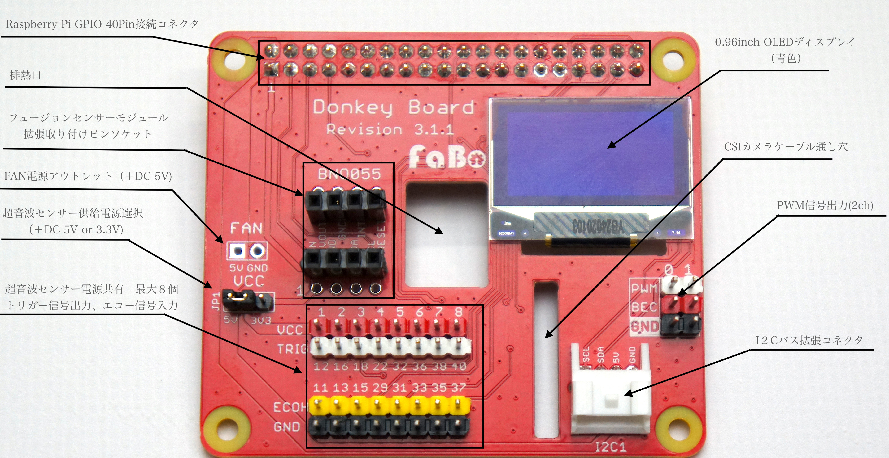
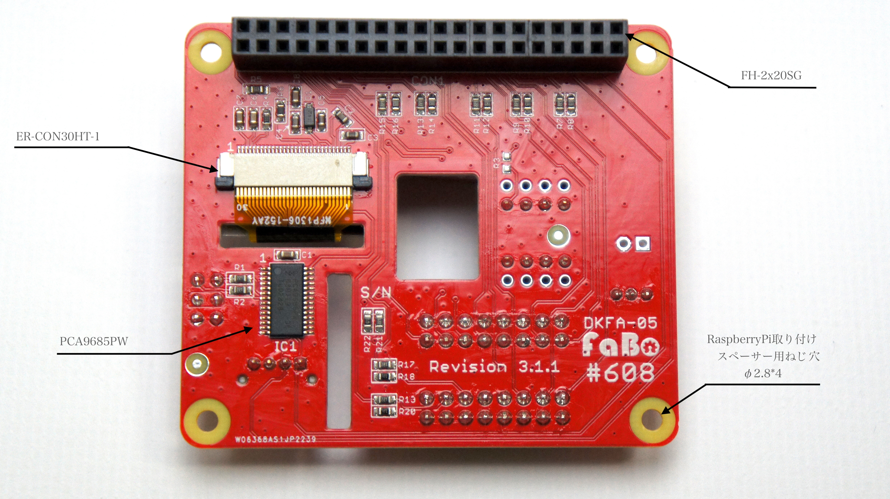
※ピン番号は物理ピン番号になります。
特徴
本ボード搭載のPCA9685がESCやサーボを制御するためのPWM信号に変換し、より安定した信号を出力します。
最大8個の超音波センサー(HC-SR04)との接続をわかりやすくかつ確実なものとします。
有機ディスプレイによるRaspberry PiのIPアドレスなどの情報を表示
I2Cバス拡張コネクタ付き
フュージョンセンサーモジュール（BNO055）が簡単に拡張できます。（別売）
使用できるRaspberry Pi
| 対象ボード |
|
| Raspberry Pi 3B＋ |
対応 |
| Raspberry Pi ４ |
対応 |
| Raspberry Pi 5 |
ーーーー |
回路図

画像をダウンロードしてください。
実装図
表
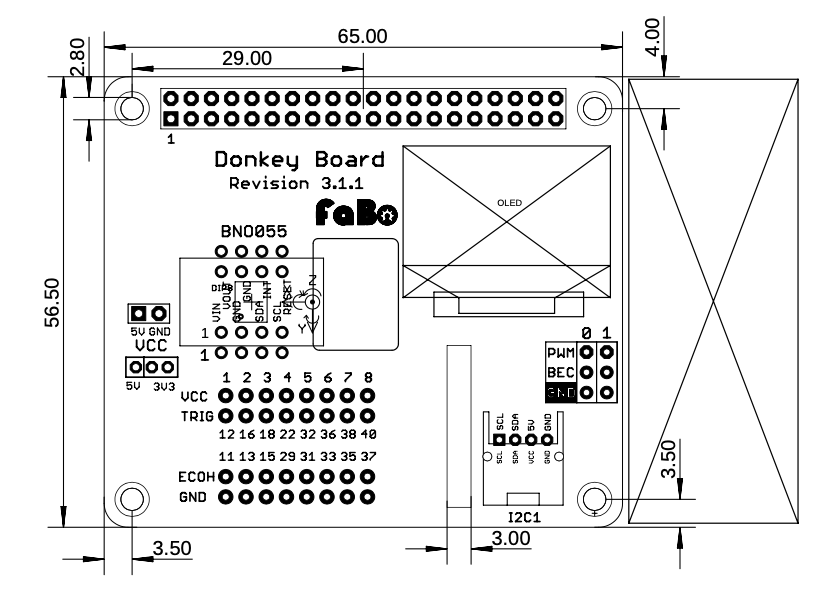
裏
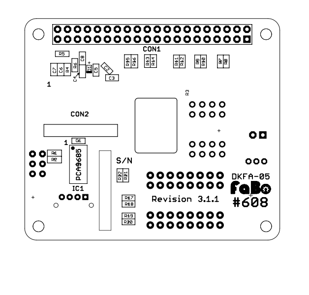
DKFA-05 BOM
| Quantity |
Reference |
Name |
Model |
Vender |
| 4 |
C1,6,7,8 |
セラミックコンデンサ 10uF 0603 X5R |
|
|
| 4 |
C2,3,4,5 |
セラミックコンデンサ 1uF 0603 Y5V |
|
|
| 1 |
CON1 |
40pin (2×20) ピンソケット |
FH-2x20SG |
秋月電子通商 |
| 1 |
CON3 |
JST PA 2mm 4pin コネクタ |
S04B-PASK-2 (LF)(SN) |
日本圧着端子製造 |
| 1 |
D1 |
小信号汎用ダイオード 100V 2A |
1N4148W |
Diodes Incorporated |
| 1 |
FAN |
2.54mm ピッチピンヘッダ 各1列１極 (赤、黒) |
|
|
| 8 |
HC1~8 |
2.54mm ピッチピンヘッダ １列8極 (赤、白、黄色、黒) |
|
|
| 1 |
IC1 |
16チャンネル, 12ビット PWM Fm+ I2CバスLEDコントローラー |
PCA9685PW |
NXP |
| 1 |
JP1 |
2mm ピッチピンヘッダ3列 １列３極 及び 2mmジャンパーピン１個 |
|
秋月電子通商 |
| 3 |
PWM0,1 |
2.54mm ピッチピンヘッダ １列２極（白、赤、黒） |
|
|
| 1 |
R3 |
DNP |
|
|
| 1 |
R4 |
チップ抵抗 390K 5% 0.1W 0603 |
|
|
| 1 |
R5 |
チップ抵抗 10K 5% 0.1W 0603 |
|
|
| 1 |
R6 |
チップ抵抗 100 5% 0.1W 0603 |
|
|
| 10 |
R1,2,7,9,11,13,15,17,19,21 |
チップ抵抗 220 5% 0.1W 0603 |
|
|
| 8 |
R8,10,12,14,16,18,20,22 |
チップ抵抗 470 5% 0.1W 0603 |
|
|
| 1 |
U2 |
30 Pin 0.5mm Pitch Top Contact ZIF Connector,FPC Connector |
ER-CON30HT-1 |
buydisplay |
| 1 |
DISPLAY |
128x64ドット0.96インチ青色OLEDディスプレイ |
Blue 128x64 0.96" OLED Display w/Top Contact Connector FPC, SSD1306 |
buydisplay |
| 1 |
BNO055 |
分割ロングピンソケット(細ピン用) １列８極 |
FH2.54-40U1GF8.5-0.5 |
秋月電子通商 |
※予告なく仕様が変更されることがございます。
BNO055接続 I2Cからシリアルに変更
BNO055をI2C接続からシリアル接続に変更するとより安定した値が得られます。
AWG30の単線かより線の線材とAWG30があるストリッパーを用意します。
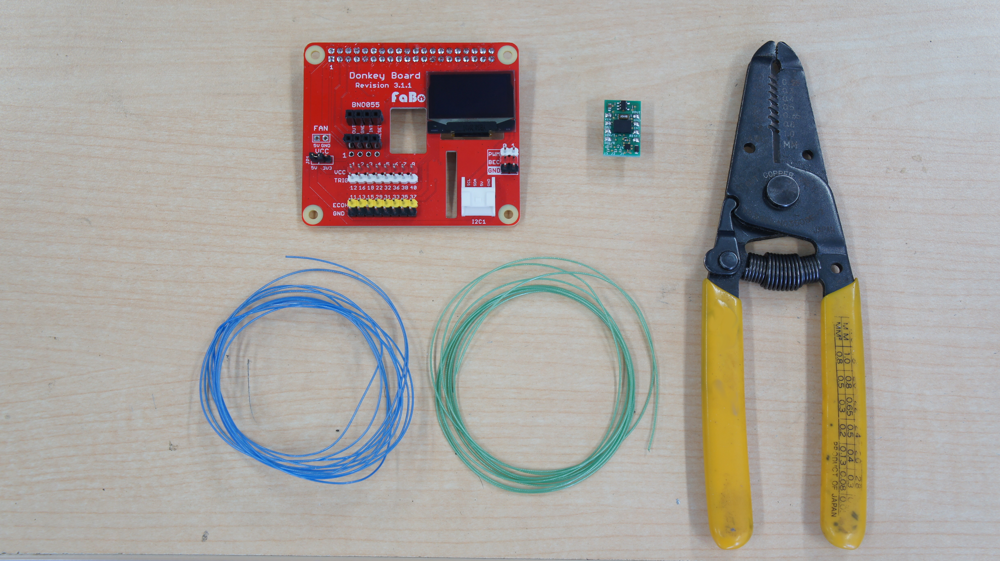
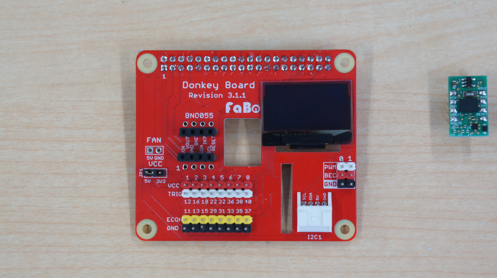
半田吸い取りなどで、BNO055モジュールはJ５をオープンにしてJ3とJ4とショートにします。
※I2C出力はJ4,J5をショート
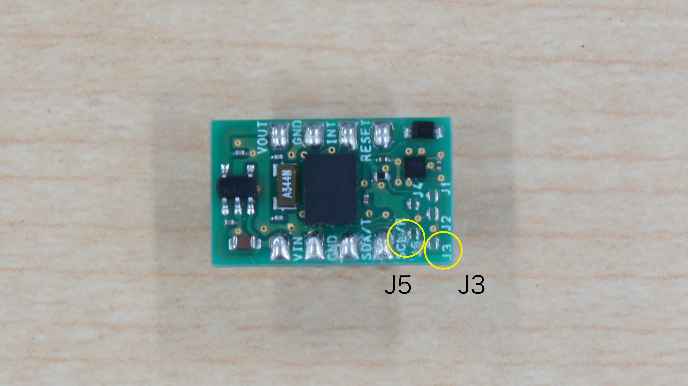
黄色い丸ところで、I2Cの線を切断します。
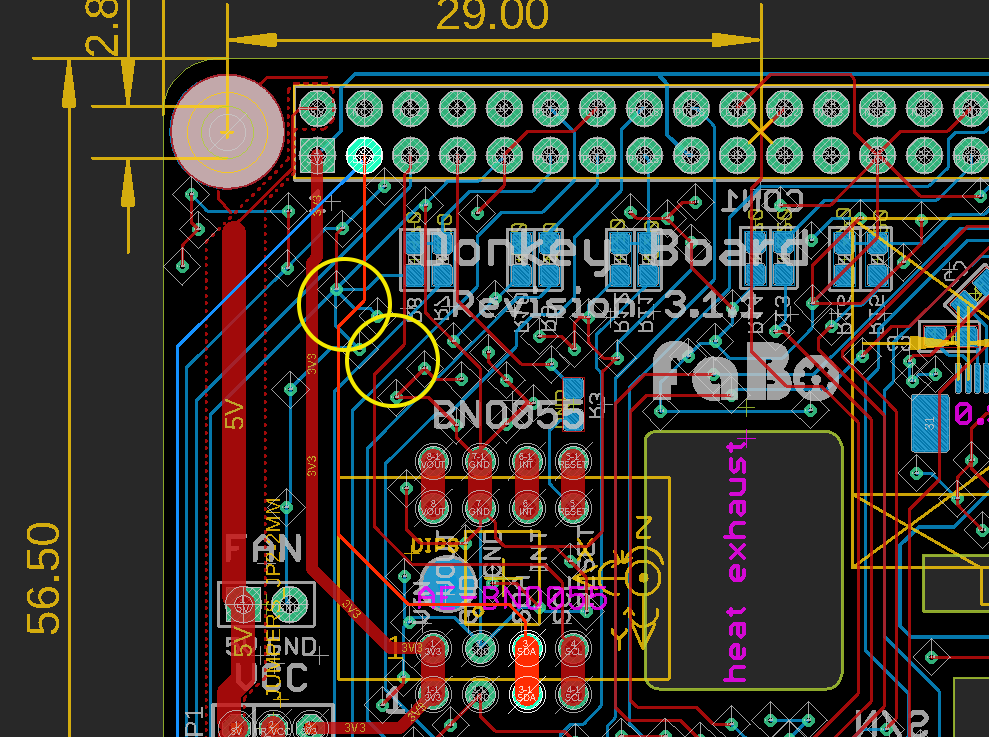
カッターナイフでI2Cの通信線のみ切断します。
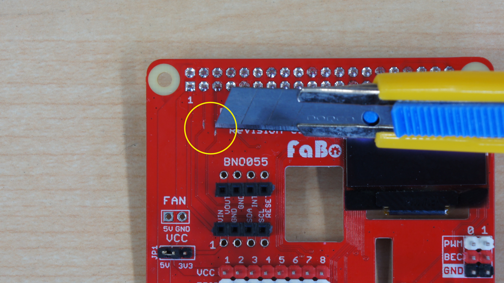
物理ピン８番、物理ピン１０番を半田吸い取り線で取り除きます。
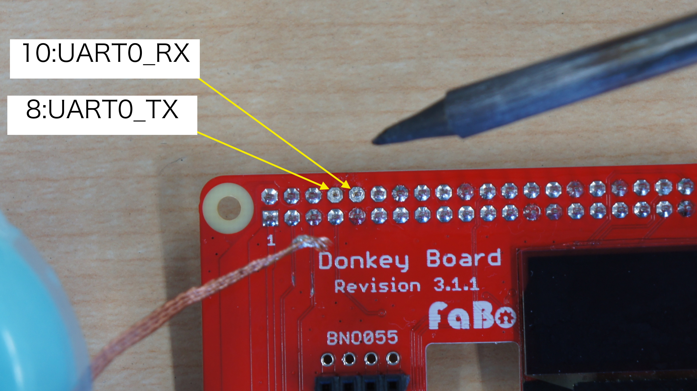
ストリッパーで１cmほど剥きます。
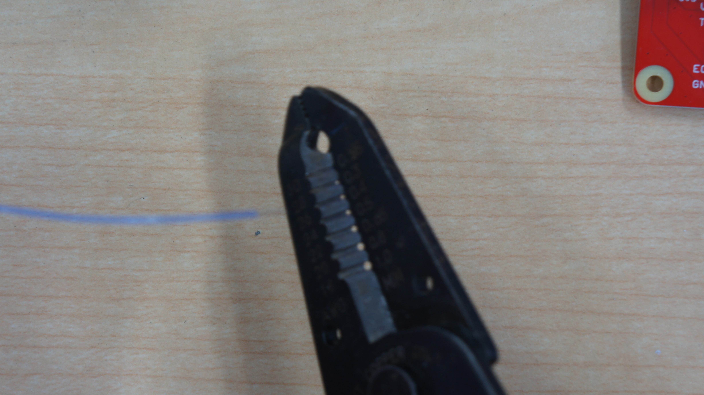
配線をピンセット等でピンを巻き込んで半田します。
それぞれのスルーホールに半出します。
ラズパイ側８ピン TX<-->BNO055モジュール 4ピン SCL（RX）
ラズパイ側１０ピン RX<-->BNO055モジュール ３ピン SDA（TX）
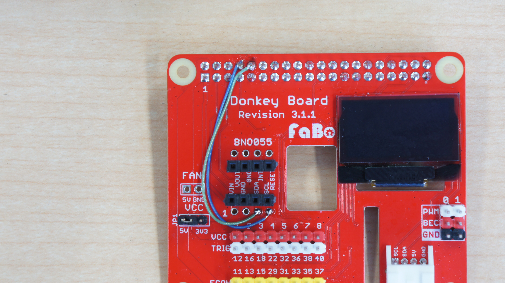
モジュールを装着しずれて挿入していないか確認します。
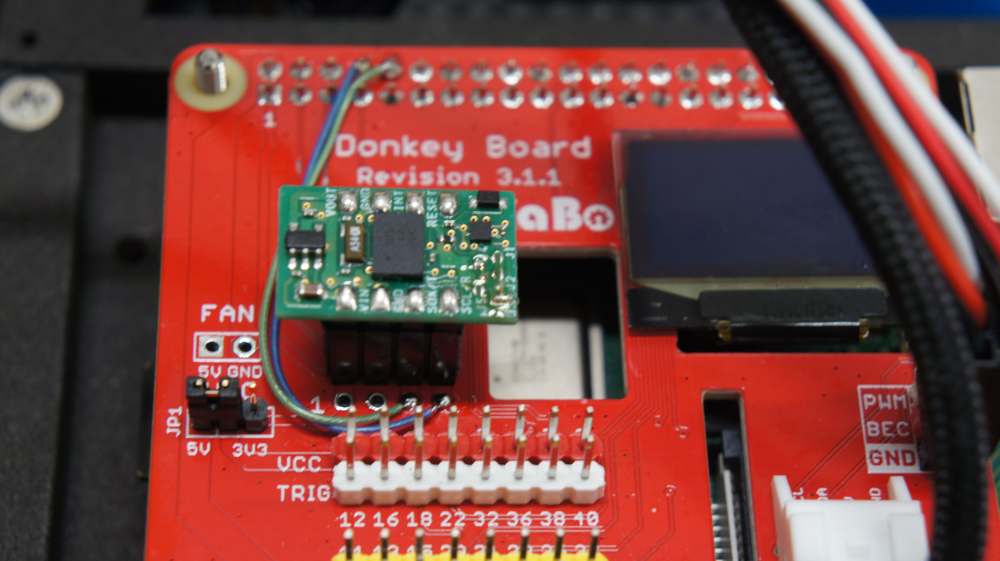
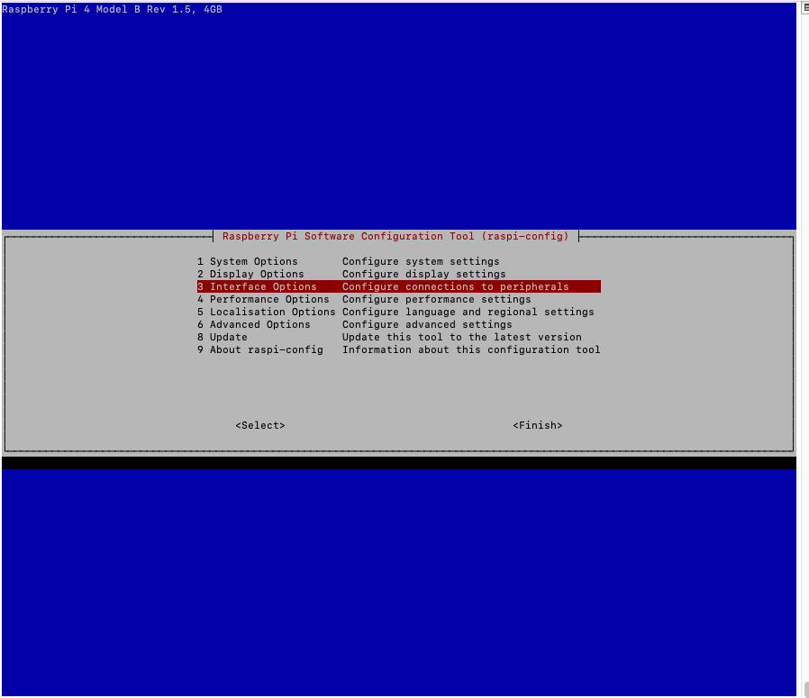
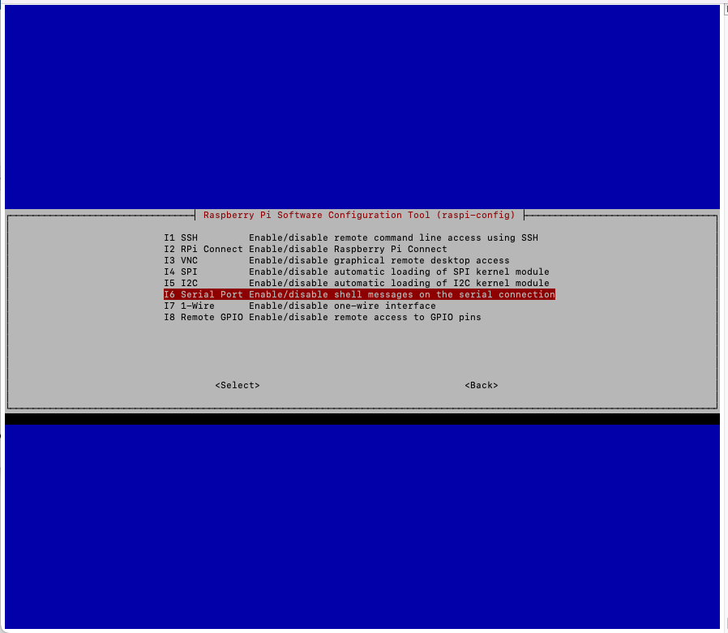


| pip3 install adafruit-circuitpython-bno055
|
使用可能なシリアルポートを調べる。
シリアル接続サンプルコード
オイラー角を確認するコードです。
1
2
3
4
5
6
7
8
9
10
11
12
13
14
15
16
17
18
19
20
21
22
23
24
25
26
27
28
29
30
31
32
33
34
35
36
37
38 | # SPDX-License-Identifier: MIT
# Copyright (c) 2017 Adafruit Industries
#
# This software is provided "as is", without warranty of any kind.
# See the MIT License for details: https://opensource.org/licenses/MIT
import time
import serial
import adafruit_bno055
def initialize_sensor(port="/dev/serial0", baudrate=115200, retries=5):
for attempt in range(1, retries + 1):
try:
uart = serial.Serial(port, baudrate=baudrate, timeout=5, writeTimeout=5)
sensor = adafruit_bno055.BNO055_UART(uart)
return sensor
except RuntimeError as e:
if "UART write error: 7" in str(e):
print(f"Initialization attempt {attempt} failed with BUS_OVER_RUN_ERROR. Retrying...")
time.sleep(0.5) # 少し待機して再試行
else:
raise
raise RuntimeError("Exceeded maximum retries for sensor initialization.")
sensor = initialize_sensor(port="/dev/serial0")
print("Sensor initialized successfully.")
while True:
try:
euler = sensor.euler # (heading, roll, pitch)
print("Euler angles:", euler)
except RuntimeError as e:
if "UART" in str(e):
print("UART error during sensor read:", e)
time.sleep(0.1)
continue
else:
raise
time.sleep(0.001)
|
リセット回路を使う
BNO055のリセットを使用するのには本基板裏面のR3を0Ω抵抗を実装するか金属ピンなどで半田してショートさせます。（デフォルトR3はオープン）
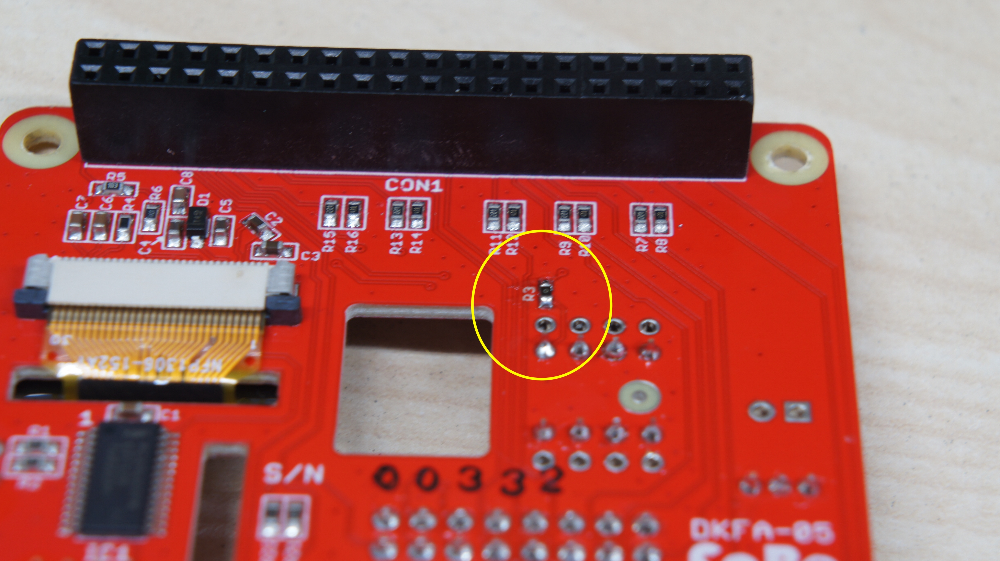
1
2
3
4
5
6
7
8
9
10
11
12
13
14
15
16
17
18
19
20
21
22
23
24
25
26
27
28
29
30
31
32
33
34
35
36
37
38
39
40
41
42
43
44
45
46
47
48
49
50
51
52
53
54
55
56
57
58
59
60
61
62
63
64
65
66
67
68
69
70
71 | # SPDX-License-Identifier: MIT
# Copyright (c) 2017 Adafruit Industries
#
# This software is provided "as is", without warranty of any kind.
# See the MIT License for details: https://opensource.org/licenses/MIT
import time
import board
import digitalio
import serial
import adafruit_bno055
# ----- センサーリセット用関数（GPIO4を使用） -----
def sensor_reset():
# GPIO4 (board.D4) をリセットピンとして設定
rst = digitalio.DigitalInOut(board.D4)
rst.direction = digitalio.Direction.OUTPUT
# リセットパルスを発行：Low 10ms → Highに戻し、その後2秒待機
rst.value = False
time.sleep(0.01) # 10ms Low
rst.value = True
time.sleep(2) # センサー起動待機（2秒）
return
# ----- センサー初期化用関数（UART経由、再試行付き） -----
def initialize_sensor(port="/dev/serial0", baudrate=57600, retries=5):
for attempt in range(1, retries + 1):
try:
# UARTポートを初期化
uart = serial.Serial(port, baudrate=baudrate, timeout=5, writeTimeout=5)
# BNO055をUART経由で初期化
sensor = adafruit_bno055.BNO055_UART(uart)
return sensor
except RuntimeError as e:
if "UART write error: 7" in str(e):
print(f"初期化試行 {attempt} 回目でエラー発生: {e}")
print("1秒待機して再試行します…")
time.sleep(1)
else:
raise
raise RuntimeError("センサー初期化の再試行回数を超えました。")
# ----- メイン処理 -----
# 1. センサーリセット（GPIO4でハードウェアリセット）
sensor_reset()
# 2. UART経由でセンサーを初期化（再試行付き）
try:
sensor = initialize_sensor(port="/dev/serial0", baudrate=57600, retries=5)
except RuntimeError as err:
print("センサー初期化に失敗しました:", err)
raise
# 初期化完了後、さらに1秒待機（必要に応じて調整）
time.sleep(1)
print("センサー初期化完了。")
# 3. 1秒間に100回（約10ms間隔）センサーからオイラー角を読み出すループ
print("Time(s), Heading, Roll, Pitch")
start_time = time.monotonic()
while True:
try:
current_time = time.monotonic() - start_time
euler = sensor.euler
if euler is not None:
heading, roll, pitch = euler
else:
heading, roll, pitch = (None, None, None)
print(f"{current_time:.3f}, {heading}, {roll}, {pitch}")
except RuntimeError as e:
print("読み出し中エラー:", e)
time.sleep(0.01) # 約10ms待機 → 1秒間に約100回読み出し
|